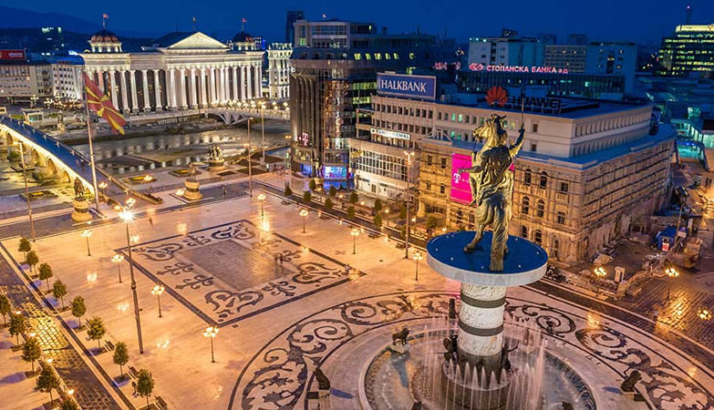
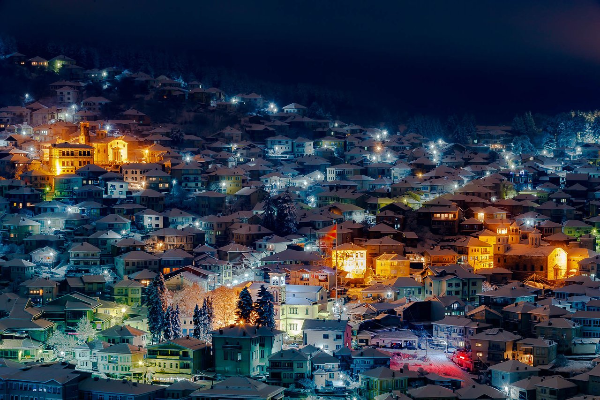

Далеку од таму..
Државата...Градот...Фамилијата..Срцето!
ДАЛЕКУ ОД ДРЖАВАТА
Дали повторно сме излажани ?
За жал или среќа може слободно да се каже дека ДА!
- За жал е затоа што по кој знае кој пат си дозволивме да падниме на иста лага и политчки ветувања кој
ама баш во секој кампања наликуваат едни на други и повторно по кој знае кој пат во себе и другите околу
себе ги лажеш дека ќе биде подобро и дека е крајно време да се сменат работите и да тргнат на подобро, онаму
каде што им е местото и онака како што е редот.
- За среќа затоа што многу млади поттикнати од ваквиот игнорантен однос на секоја власт да ја бараат
среќата во друга држава.
Држава на која приоритет не само зголемувањето на пензиите и субвенциите (ваучери) за пензионери, слободна карта за автобус, користење на термални
бањи и уште еден куп такви приоритети кој ги уживаат пензионерите .
Држава на која не секоја изборна кампања младите се приоритет за:
на бина, во први редови (да ги фатат камерите),
водители, ракоплескачи, тепачи, знаменоносачи, „плакато-лепачи„ и се она што неможат или не се способни
да го постигнат „фотељашите„ затоа што не им е таму местото, тие веќе го поминале тој период и нели сега се "унапредени".
КАДЕ ШТО ИМА ПРАВНА ДРЖАВА.
КАДЕ ДРЖАВАТА ПРИПАЃА НА НАРОДОТ.
КАДЕ КРИМИНАЛОТ Е КРИМИНАЛ ! А КРИМИНАЛЕЦОТ Е ВО ЗАТВОР.
КАДЕ ТЕРОРИСТОТ Е ТЕРОРИСТ И ОСУДЕН КАКО ТЕРОРИСТ, А НЕ НА ФУНКЦИОНЕР.

{kind=link}
ДАЛЕКУ ОД ГРАДОТ
Гледаш градот во кој си се образувал имал среќно детство во кој си растел и пораснал, години уназад се унуштува.
Како низ годините пријатели, роднини, другари го напуштаат , не затоа што не го сакаат туку заради тоа што
немаат избор.
Го напуштаат затоа што секој мисли на тоа како да обезбеди посветла иднина за себе и своите поколенјиа.
Го напуштаат затоа што “шерифите“ само го менуваат дресот а не и навиките.
Го напуштаат зато што тие што имаа од што да живеат им беше одземено правото на опстанок поради различна партиска определба.
Го напуштаат и вечно ќе се надеваат дека еден ден ќе се врати стариот сјај.
Град со огромен потенцијал кој му треба и има шанса да се искористи, шанса која не смее ниту сегашна ниту идна
ама баш никоја власт не смее да ја пропушти.
Искра надеж после долги години пропаст е родена таму, се надевам ќе пламне и ќе изгрее сонцето за сите!
 Те газат.. те рушат... те уништуваат... те силуваат... опинци, дојденци. Не те чувствуваат како свое затоа е така. Те уништувале, те рушеле, те палеле со векови и во турско но пак си се издиганало како феникс од пепел, знам дека повторно ќе успееш...{kind=link}
ДАЛЕКУ ОД ФАМИЛИЈАТА
Оној кој не бил долг период далеку од најблиските не знае што значи, да се биде далеку.Да се биде далеку од се она што има најголемо значење, поради борба за подобро утре. Може да биде лесно само да за себични поединци кој размислуваат само на и за себе, но не и за оние кој се навикнати да споделуваат среќа и тага со најблиските. Да се биде далеку од фамилијата е многу повеќе отколку она што се прикажува на социјалните мрежи.
Да се биде далеку од фамилијата е да се пропуштат: новородечина, првите родендени на внуци, дипломски, матурски, свадби, крштевки, веридби и се она што човек го право среќен како припаднк на едно семејство. Да се биде далеку од фмилијата е да: се сподели тагата со најблиските, да се поздравиш со некој кој не знаеш дали ќе го видиш пак, да гледаш како возрасните стареат а најмладите растат, и сето тоа гледано од период во период, период кој ствара шок заради тоа што секоја промена кај блиските можеш да ја приметиш, затоа што долгото време на твоерто отсуство може да ја примети промената и кај најблиските.
ДА СЕ БИДЕ ДАЛЕКУ.... од СРЦЕТО